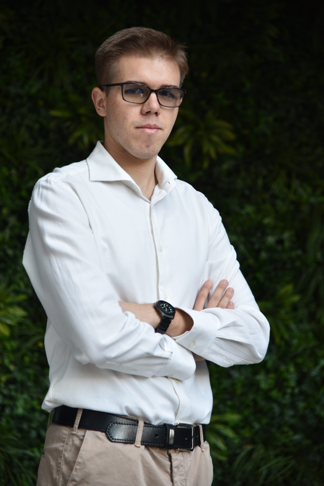
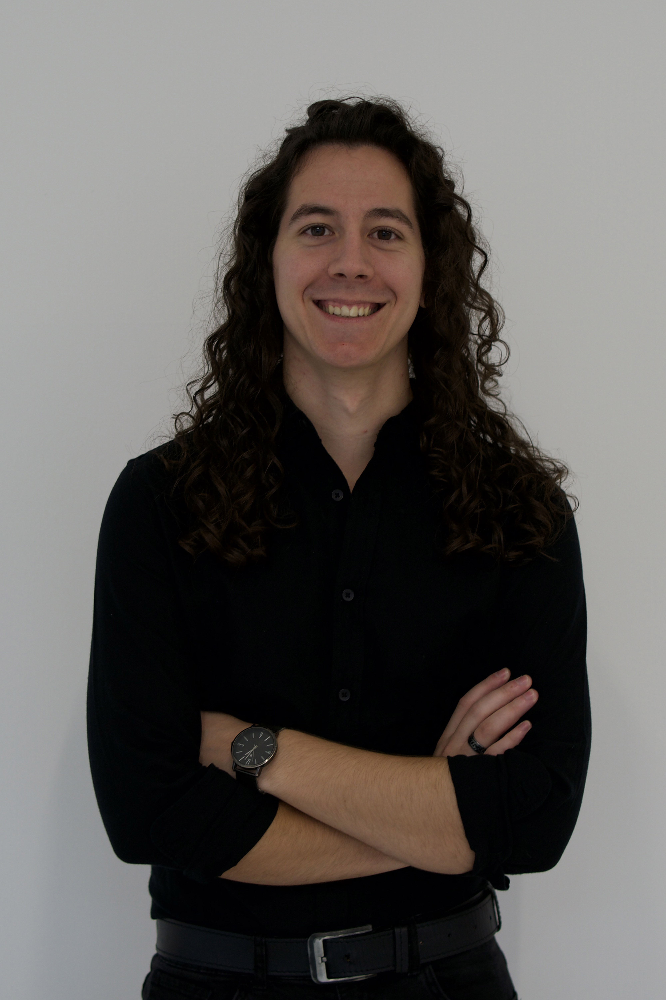
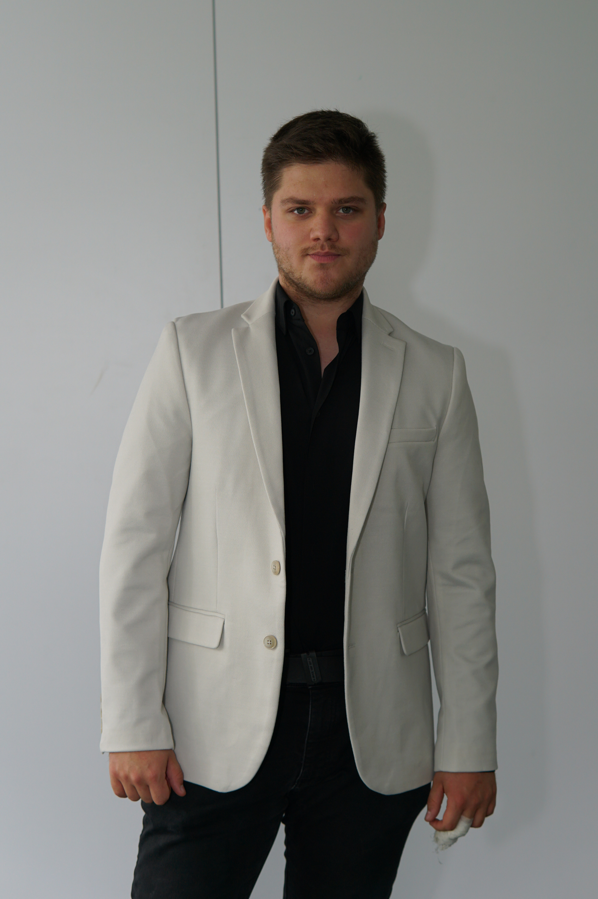
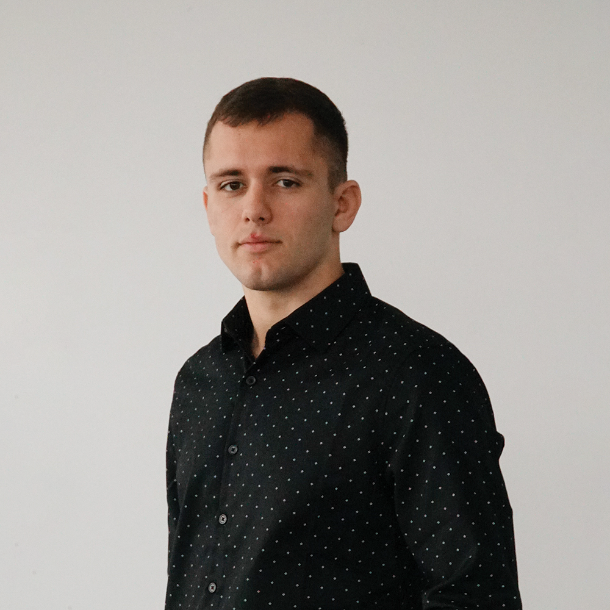
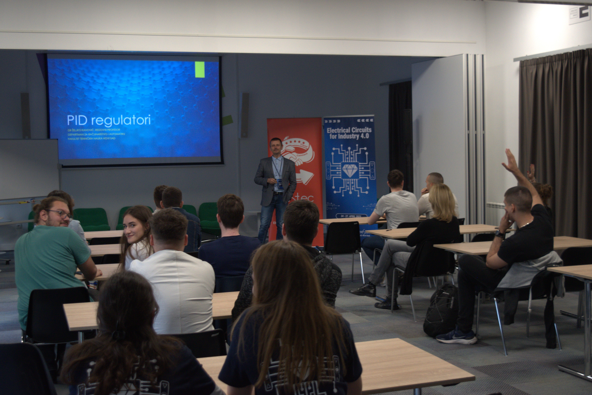
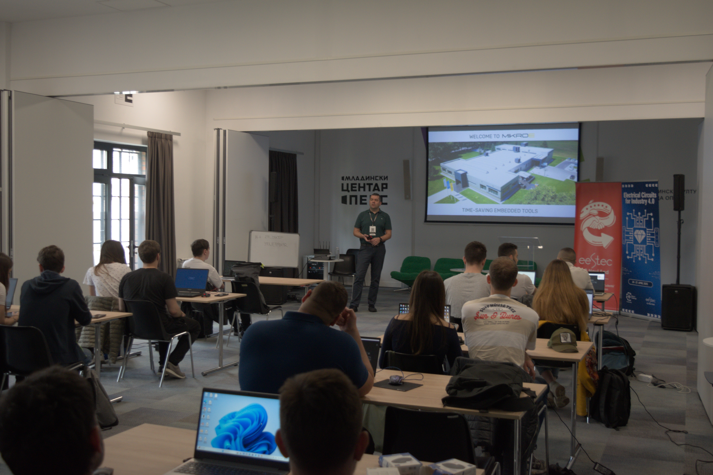
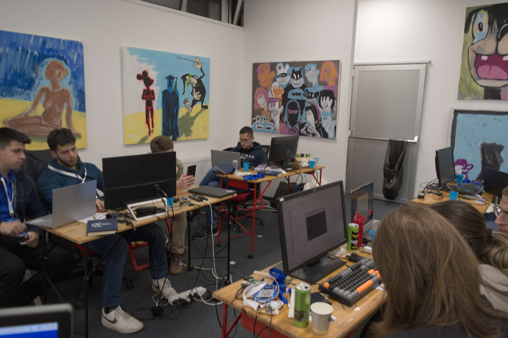
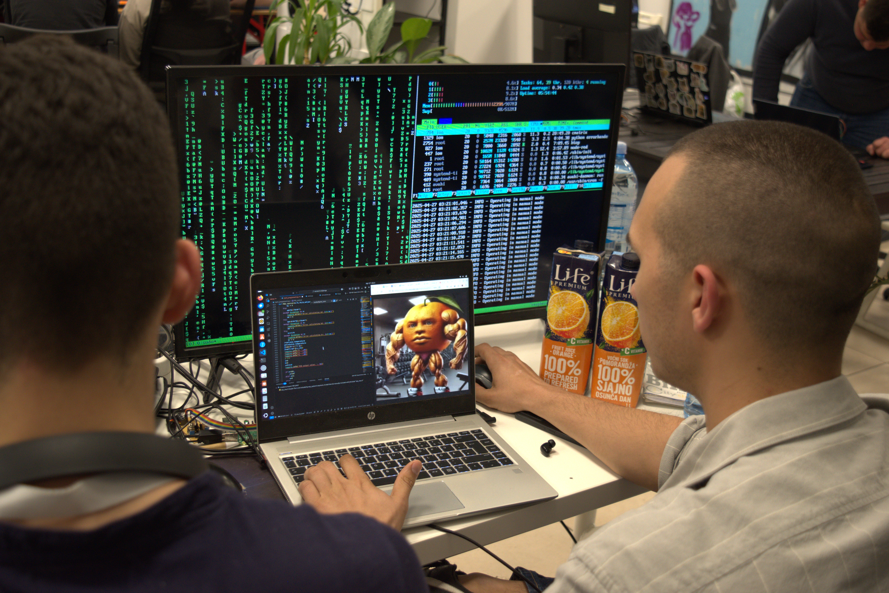
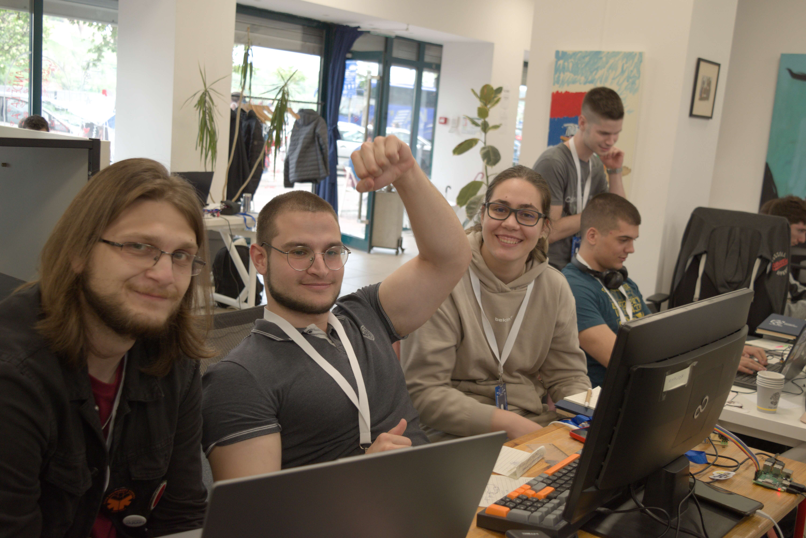
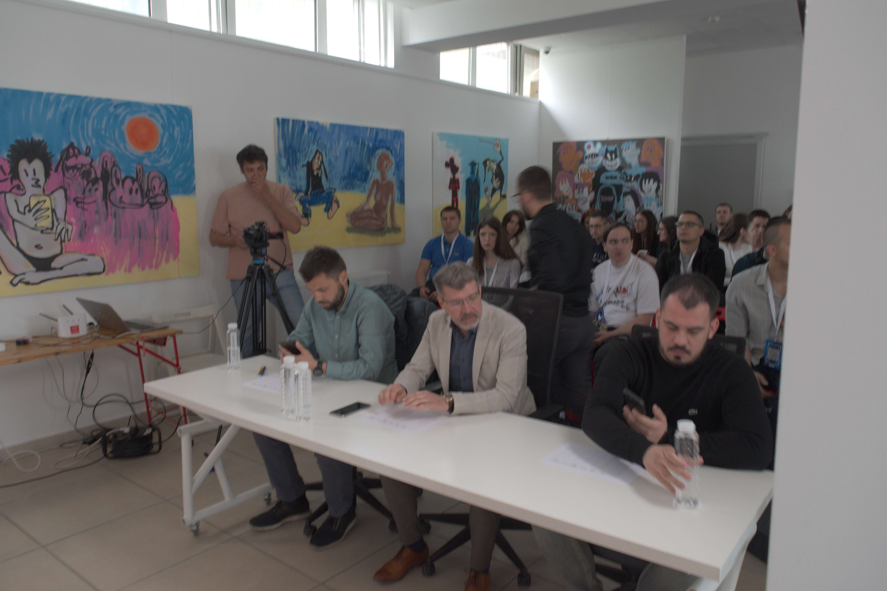

Petar Vukojević
Engineer at
Siemens
Od februara do maja, već osam godina zaredom, pod okriljem studentskog udruženja EESTEC održava se serija izazova – EESTech Challenge, internacionalni hakaton koji okuplja ambiciozne studente elektrotehnike i računarstva.
Pre takmičenja organizujemo sveobuhvatan akademski program koji obuhvata panel diskusiju, stručna predavanja otvorenog tipa i specijalizovane radionice za takmičare. Kroz ove aktivnosti, učesnici i zainteresovani studenti detaljno se upoznaju sa ovogodišnjom temom i pripremaju za predstojeći izazov.
Šta se dešava kada se veštačka inteligencija uključi u proizvodni proces? Od pametnih fabrika do prediktivne analitike – AI u Industriji 4.0 nije višebudućnost, već svakodnevica.Pridruži se panelu i saznaj kako izgleda industrija u kojoj algoritmi odlučujupametnije, brže i preciznije.

Petar Vukojević
Engineer at
Siemens

Petar Čičković
Lead Developer at
Mikroelektronika

Laslo Uri
Data Engineer at
Osterus

Mihailo Vojinović
Software Engineer at
VegaIT
Tokom takmičenja, obezbeđena je stručna podrška mentora koji će nekoliko sati biti na raspolaganju takmičarima za konsultacije. Po završetku takmičarskog dela, stručni žiri evaluiraće prezentovane projekte i odabrati pobednički tim.

Pripremna radionica

Radionica mikroelektronike
EESTech Challenge nije samo takmičenje – to je prilika za usavršavanje ličnih i profesionalnih veština, rad na realnim problemima van učionice, stvaranje novih prijateljstva i profesionalnih poznanstva, jer će takmičenje okupiti i iskusne inženjere iz industrije u ulozi mentora.





